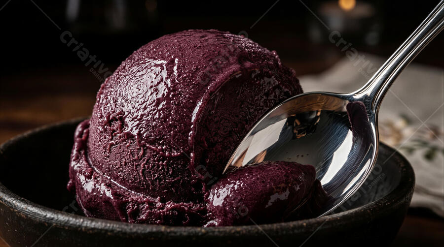

Um mundo de doçura em cada colherada!
Açaí cremoso, sorvetes artesanais e aquele carinho que transforma uma pausa simples em um momento especial. Venha conhecer a Bethel!
★★★★★ 4,7/5 • 301 avaliações informadas

Uma opção refrescante para deixar seu dia mais gostoso.
Sabores especiais preparados com cuidado e criatividade.
Venha curtir no local ou passe para levar sua sobremesa.
Um cardápio para se apaixonar
Tem sempre um sabor esperando por você. Consulte pelo WhatsApp as opções e disponibilidades do dia.
Fotos ilustrativas. Consulte sabores, tamanhos, adicionais e valores diretamente com a loja.

Mais que uma sobremesa: um carinho em forma de sabor.
A Bethel Açaiteria e Sorveteria é aquele lugar para fazer uma pausa, encontrar seu sabor favorito e compartilhar bons momentos.
Nossa proposta é tornar cada visita mais doce, com açaí, sorvetes e casquinhas. Estamos na Vila Mutirão I, em Goiânia. Será um prazer receber você!
O carinho de quem já provou
“Melhor sorveteria da região, é incrível ver a criatividade em cada sorvete e saber que é tudo feito lá mesmo com muito carinho. Recomendo sem dúvidas!”
Edmara Ruana“Melhor sorvete que tem em Goiânia, extraordinário o trabalho dessa equipe...”
Alex MelloVenha visitar a Bethel
Estamos prontos para deixar seu dia um pouquinho mais doce.
Encontre a gente
📍 Endereço
Av. do Povo, 733 – Vila Mutirão I
Goiânia – GO, 74480-110
☎️ Telefone / WhatsApp
(62) 99262-4659
🕒 Funcionamento
Consulte os horários atualizados pelo WhatsApp.